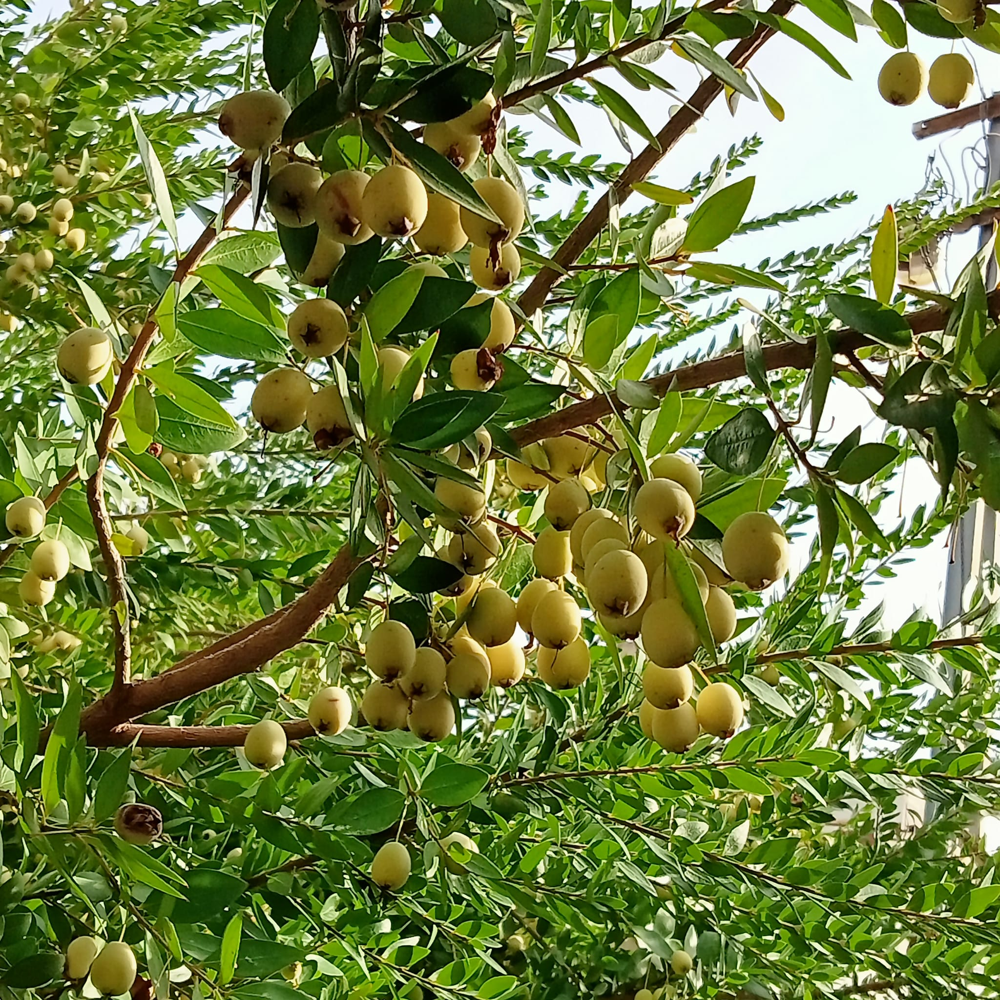
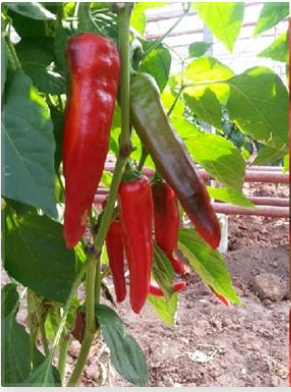

NEDEN MURTCU'YUZ? Adana'nın işgali sırasında şehre murt satıcısı kılığında girip, düşmana karşı istihbarat faaliyeti yürüten KARAİSALI halkına verilen yerel lakap. Murtcu'luk geçmişinde fedakârlık ve kahramanlık barındırıyor olmaktır!
 Enstitümüz tarafından halk arasında KARAİSALI TİPİ olarak bilinen biber popülasyonundan seleksiyon yöntemi ile ıslah edilen ve HAYRİYE ismi ile tescil edilerek Standart Tohumluk Kayıt Listesine eklenen biber çeşidimiz 2018/04 sayılı Bitki Çeşitleri Bülteninde 2018/230 tescil numarası ile ilan edilerek 5042 sayılı Yeni Bitki Çeşitlerine ait Islahçı Haklarının Korunmasına İlişkin Kanun çerçevesinde fikri mülkiyet hukuku hükümlerine göre koruma altına alınmıştır. T.C. TARIM VE ORMAN BAKANLIĞI ALATA BAHÇE KÜLTÜRLERİ ARAŞTIRMA ENSTİTÜSÜ MÜDÜRLÜĞÜ